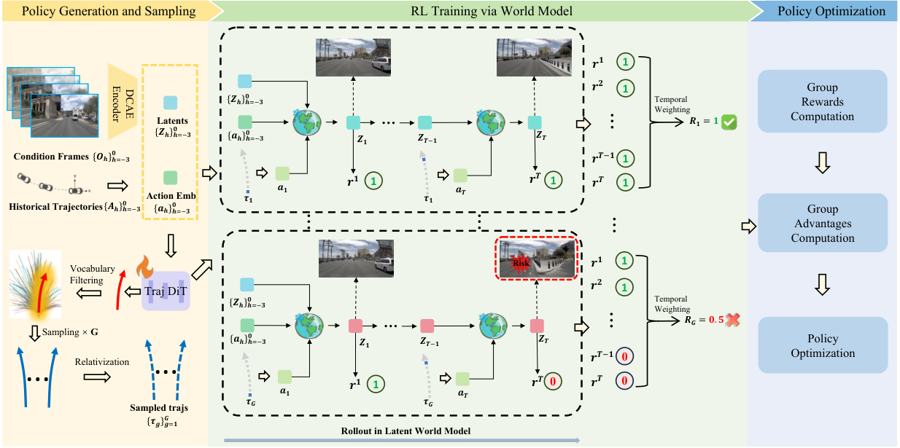

Summary
把驾驶 world model 的生成过程压到 1 步，并在 latent 空间里完成 RL：SF-WM 用 shortcut forcing 把采样从 100 步降到 1 步，AD-RM 在 latent 上逐 horizon 预测 8 维奖励，GRPO 在轨迹词表的 Gaussian 邻域内采样。NAVSIM v2 navtest 上 87.7 EPDMS（Epona 基线 85.1），单帧推理 0.03 s。
Problem & Motivation
- 真实世界做 RL 试错成本与安全风险不可接受；传统仿真器有 sim-to-real gap，于是用 video world model 做 imagination-based training。
- 现有 pixel-level diffusion world model 有两个瓶颈：100 步采样约 2 s/帧，无法支撑高频 RL 交互；pixel-level 目标偏向视觉保真，而非驾驶安全所需的空间与动态理解。
- 已有 world-model RL（ReSim、WorldRFT、RAD 等）要么依赖 3D 标注、要么没有充分利用 latent 特征、要么在 OOD 动作下产生幻觉。作者的观察是：Video DiT 去噪后的 latent 已经有良好的空间结构与语义一致性（Fig. 2 的 PCA），可以直接作为 world model 的状态表示。
Method
0. 总体框架
-
两个紧耦合组件：
- World Model with Latent Reward Modeling：
SF-WM单步预测未来 latent，AD-RM自回归地给出逐 horizon 的奖励。 - RL with Vocabulary Sampling：策略在高质轨迹词表的 Gaussian 邻域内采样，用
GRPO更新，避免 OOD 动作触发 world model 幻觉。
- World Model with Latent Reward Modeling：
1. 基础 world model 与 SF-WM
- 以
Epona为 backbone（autoregressive flow-matching diffusion，统一视频生成与轨迹规划）。给定历史观测 与动作 ：
-
经 temporal projection 得 ，与 action embedding 在空间维拼接为 ，取最后一帧作为条件 ，预测下一帧 latent 与未来轨迹 。原始模型在 nuPlan 上以 10 Hz 训练，而 NavSim 以 2 Hz 运行，因此先在 NavSim 上微调，再做步数蒸馏。
-
Shortcut Forcing World Model（SF-WM）：在 rectified flow 下定义
- 训练时采样步长与信号水平：
- 模型同时以 与 为条件（step embedding）。 时用标准 flow matching 目标； 时用两个 teacher 半步：
- 推理时可指定 ，用 1–4 步生成；论文称相比 100 步最多 80× 加速，1 步时视觉清晰度仍能维持（Fig. 4）。
2. Autoregressive Dense Reward Model（AD-RM）
- 词表构造：从 8192 条轨迹中，按终点状态过滤到人类轨迹邻域：
-
再按 排序、等距采样，得到 的轨迹词表 。每条轨迹在 NavSim PDM 仿真器中打分，得到 8 个维度 ；与以往只算整条轨迹分数不同，这里在 s 内每 0.5 s 打一次分，形成 8 个 horizon 的监督信号。
-
奖励模型：冻结 world model，自回归预测 ，历史编码为
- latent 维 经 learnable query 压到 ；8 个奖励维度各有可学习 base ，动态条件为
- 监督用 BCE：
3. RL：奖励设计与词表采样
- 奖励融合：安全项 ，任务项 。安全项用 log-sigmoid 聚合，任务项用加权和再取 log：
-
log 融合使碰撞类事件把安全项压向 0、 趋向 ，从而让安全约束主导奖励；逐 horizon 求和则提供 temporal credit assignment。
-
Gaussian 词表采样：以策略输出 为均值、固定方差构造 ，按 Mahalanobis 距离对词表轨迹排序：
-
混合两种采样： 条按 softmax 概率做判别性选择， 条从 Gaussian 邻域做局部探索，。
-
策略优化：组内归一化优势与 PPO 式裁剪：
4. 实现细节
| 项目 | 设置 |
|---|---|
| 基础模型 | Epona，nuPlan + nuScenes 从零训练；图像 512×1024 |
| 硬件 | 32 × NVIDIA H20 |
| NavSim 微调 | AdamW，batch 128，lr ，weight decay ，5 epochs，约 1 天 |
| SF-WM 训练 | 12 epochs，约 3 天，其余超参同上 |
| 奖励模型 | batch 320，lr ，12 epochs，约 1 周 |
| RL | batch 196，lr ，2 epochs，约 8 h |
| 采样步数 | VisDiT 1 步，TrajDiT 20 步 |
| 推理硬件 | 单张 H20 |
Pipeline

- World model 适配：Epona 在 NavSim 上以 2 Hz 微调，对齐生成间隔。
- 步数蒸馏：用 shortcut forcing 训练 SF-WM，使其支持 1–4 步采样。
- 词表与奖励监督：过滤 8192 条轨迹得到 256 条词表，在 PDM 仿真器中按 8 个 horizon 打 8 维分数。
- 奖励模型训练：冻结 SF-WM，对词表轨迹做 latent rollout，自回归预测逐 horizon 奖励（BCE）。
- RL 训练：策略输出 → Gaussian 词表采样 条候选 → SF-WM latent rollout → AD-RM 打 dense reward → 组内归一化优势 → GRPO + BC + KL 更新。
- 推理：策略直接输出轨迹；需要可视化或事故分析时，才把 latent 解码成 RGB，训练时不解码。
Key Results
1) NAVSIM v2 navtest（Table 1）
- 测试集为 136 个场景，指标为 EPDMS（NC / DAC / DDC / TLC / EP / TTC / LK / HC / EC 聚合）。
| Method | NC | DAC | DDC | TLC | EP | TTC | LK | HC | EC | EPDMS |
|---|---|---|---|---|---|---|---|---|---|---|
| TransFuser | 96.9 | 89.9 | 97.8 | 99.7 | 87.1 | 95.4 | 92.7 | 98.3 | 87.2 | 76.7 |
| Hydra-MDP++ | 97.2 | 97.5 | 99.4 | 99.6 | 83.1 | 96.5 | 94.4 | 98.2 | 70.9 | 81.4 |
| DriveSuprim | 97.5 | 96.5 | 99.4 | 99.6 | 88.4 | 96.6 | 95.5 | 98.3 | 77.0 | 83.1 |
| iPAD | 98.7 | 97.8 | 99.1 | 99.8 | 83.5 | 98.0 | 96.2 | 98.1 | 85.6 | 84.1 |
| ReCogDrive | 98.3 | 95.2 | 99.5 | 99.8 | 87.1 | 97.5 | 96.6 | 98.3 | 86.5 | 83.6 |
| DiffusionDrive | 98.2 | 95.9 | 99.4 | 99.8 | 87.5 | 97.3 | 96.8 | 98.3 | 87.7 | 84.5 |
| DriveVLA-W0 | 98.5 | 99.1 | 98.0 | 99.7 | 86.4 | 98.1 | 93.2 | 97.9 | 58.9 | 86.1 |
| World4Drive | 97.8 | 96.3 | 99.4 | 99.8 | 88.3 | 97.1 | 97.7 | 98.0 | 53.9 | 84.8 |
| WorldRFT | 97.8 | 96.5 | 99.5 | 99.8 | 88.5 | 97.0 | 97.4 | 98.1 | 69.1 | 86.7 |
| Epona (Base) | 97.1 | 95.7 | 99.3 | 99.7 | 88.6 | 96.3 | 97.0 | 98.0 | 67.8 | 85.1 |
| DreamerAD | 98.0 | 97.2 | 99.5 | 99.8 | 87.8 | 97.4 | 97.5 | 98.3 | 72.4 | 87.7 |
- 相对 Epona：NC +0.9、DAC +1.5、TTC +1.1、LK +0.5、HC +0.3、EC +4.6，EP −0.8，EPDMS +2.6。作者把 EP 下降解释为 safety-first 的主动取舍。
2) NAVSIM v1 navtest（Table 2）
| Method | Input | NC | DAC | TTC | Comf | EP | PDMS |
|---|---|---|---|---|---|---|---|
| WoTE | C&L | 98.5 | 96.8 | 94.9 | 99.9 | 81.9 | 88.3 |
| DriveVLA-W0 | C&L | 98.7 | 96.2 | 95.5 | 100.0 | 82.2 | 88.4 |
| AutoVLA | C-Only | 98.4 | 95.6 | 98.0 | 99.9 | 81.9 | 89.1 |
| RecogDrive | C-Only | 97.9 | 97.3 | 94.9 | 100.0 | 87.3 | 90.8 |
| World4Drive | C-Only | 97.4 | 94.3 | 92.8 | 100.0 | 79.9 | 85.1 |
| WorldRFT | C-Only | 97.8 | 96.8 | 94.0 | 100.0 | 81.7 | 87.8 |
| Epona (Base) | C-Only | 97.9 | 95.1 | 93.8 | 99.9 | 80.4 | 86.2 |
| DreamerAD | C-Only | 98.0 | 97.2 | 94.3 | 100.0 | 83.1 | 88.7 |
- 相对 Epona：NC +0.1、DAC +2.1、TTC +0.5、Comf +0.1、EP +2.7，PDMS +2.5。论文的表述是 “state-of-the-art among all world-model-based methods”——全表最高仍是 RecogDrive 90.8 与 AutoVLA 89.1。
3) 组件消融（Table 3）
| ID | SF-WM | AD-RM | RL-SM | EPDMS |
|---|---|---|---|---|
| 1 | 85.1 | |||
| 2 | ✓ | Vocab Sampling | 86.4 | |
| 3 | ✓ | Vocab Sampling | 87.0 | |
| 4 | ✓ | ✓ | Vocab Sampling | 87.7 |
| 5 | ✓ | ✓ | WorldRFT | 86.6 |
| 6 | ✓ | ✓ | Flow-GRPO | 87.0 |
- 拆分来看：SF-WM 带来 +1.3（ID2 → ID4），AD-RM 带来 +0.7（ID3 → ID4），采样方式相对 Flow-GRPO +0.7、相对 WorldRFT +1.1。
4) 采样步数与延迟（Table 4）
| Steps | Latency / frame (s) | EPDMS |
|---|---|---|
| 16 | 0.40 | 87.7 |
| 4 | 0.10 | 87.8 |
| 1 | 0.03 | 87.7 |
- 1 步与 16 步的 EPDMS 几乎相同，说明在该设置下规划性能对 world model 采样步数不敏感。
5) 奖励模型数据量（Table 5）
| Data Scale | EPDMS |
|---|---|
| Epona Baseline | 85.1 |
| 20% | 87.5 |
| 40% | 87.5 |
| 100% | 87.7 |
- 作者据此认为奖励模型只需少量数据即可学到好坏驾驶行为的差异。
Strengths & Weaknesses
Strengths
- 问题切分干净：三个组件各自对应一个明确瓶颈——采样慢、奖励稀疏、OOD 探索幻觉；消融也按这个结构组织，容易读懂每个模块的边际贡献。
- 用 latent 而非 pixel 做 RL，既避开解码开销，又保留了可解码的可解释性；0.03 s/帧使 high-frequency RL 交互真正可行。
- dense reward 的设计（8 维 × 8 horizon + log-sigmoid 安全融合）比只给整条轨迹一个分数更符合 credit assignment 的需求，且不需要额外 3D 标注。
- 词表约束采样是对 world model 幻觉的直接工程回应，并在同容量下与 WorldRFT、Flow-GRPO 做了对照，不是只与自己比。
- 1 步 SF-WM 与 16 步性能持平，说明 shortcut forcing 在这个任务上没有牺牲规划所需的信息，属于可信的效率收益。
Weaknesses
- 只在 navtest 上验证：缺少 navhard 与真正的 long-tail / 反应式场景，而论文的 motivation 正是 long-tail；“SOTA” 实际只覆盖 Table 1 自选的 11 个方法，87.7 也不能与 navhard 上的 34.9 直接比较。
- 奖励与评测同源：奖励模型蒸馏 PDM、评测又用 PDM/EPDMS，闭环内指标自洽但外部效度未知；没有真人偏好、反应式闭环或实车验证。
- 绝对提升有限且部分来自 baseline 选择：+2.6 可拆为 SF-WM 1.3 + AD-RM 0.7 + 采样 0.7；v1 上 88.7 并非全表最佳（RecogDrive 90.8、AutoVLA 89.1），Epona 微调后的 85.1 是否已含 NavSim 适配也未说明；EP 方向在 v1/v2 相反（+2.7 vs −0.8）。
- “first latent world model framework” 说法偏强：Dreamer 系列与若干 latent driving world model 已在 latent 空间做 rollout，更准确的定位是 “first 1-step latent WM + dense latent reward for driving RL”。
- 内部口径不一致：0–4.0 s 按 0.5 s 应为 9 个点却写 8 个；式(18) 取 ，式(19) 却从 1 加到 8。
- 关键超参与规模缺失：、、、奖励模型参数量、过滤后轨迹数、多种子方差均未报告。
- “1 步与 16 步等价”的证据较弱：EPDMS 相同，但生成质量只有定性图，不足以说明 shortcut forcing 无损。
- 奖励数据效率结论偏乐观：20% 与 100% 奖励数据给出 87.5 / 87.7，几乎无差别，既可能是奖励信号已被饱和，也可能是评测分辨率不足，论文未区分。
- 预训练数据重叠未说明：Epona 在 nuPlan 上预训练而 NavSim 由 nuPlan 构建，场景重叠程度直接影响 85.1 → 87.7 的解释。
- 训练成本与 “efficient” 反差：32×H20、奖励模型约一周，效率收益实际集中在推理侧。
Notes
-
论文定位：把 video world model 当作 RL 的 latent simulator，用可学习的 dense reward 替代昂贵的环境交互，并用轨迹词表把 exploration 限制在物理可行流形内。核心贡献是 “让 world model 快到可以参与 RL 循环”，而不是提出新的世界模型结构。
-
可迁移点：
- shortcut forcing 的 step embedding（同时以 和 为条件）可以直接套到任何 flow-matching 视频模型上，把它变成 1–4 步 sampler；对需要高频采样的 planner/RL 场景是通用加速手段。
- “在受限候选集上用规则/仿真器打标签 → 训练 latent reward model → RL 时替代环境” 这套流程，可以迁移到其他难以实时仿真的具身任务。
- 以策略输出为均值、在词表上按 Mahalanobis 距离做混合采样，是一种通用的 constrained exploration 方案，比直接对连续动作加 Gaussian 噪声更不容易跳出可行域。
-
待跟进：
- latent reward 在长尾场景下的有效性：现有验证只在 navtest 的常规场景，若换到 navhard 或反应式闭环，EP 与安全项的拉锯是否会改变、奖励模型是否会偏向保守或冒进，目前没有证据。
- 奖励模型的校准与不确定性：论文没有报告 held-out 轨迹上的校准误差，也没有给出与 “best-of-N + 真 PDM 打分” 的上界差距；这两项决定了 latent reward 能否安全地替代仿真器。
- 采样超参与词表覆盖：、 未给出取值和敏感性分析，10 m / 5 m / 20° 的过滤阈值也可能把必要的避险动作排除在词表之外，需要看词表在 cut-in、施工区等场景下的覆盖率。
- 预训练数据重叠：Epona 在 nuPlan 上预训练而 NavSim 由 nuPlan 构建，navtrain/navtest 与预训练场景的重叠程度会直接影响 85.1 → 87.7 这一提升的解释。
- 训练效率的边界：论文的 “efficient” 只体现在推理侧，32 张 H20、奖励模型约一周的训练成本没有与 ReSim、WorldRFT 等方法做同口径对比。